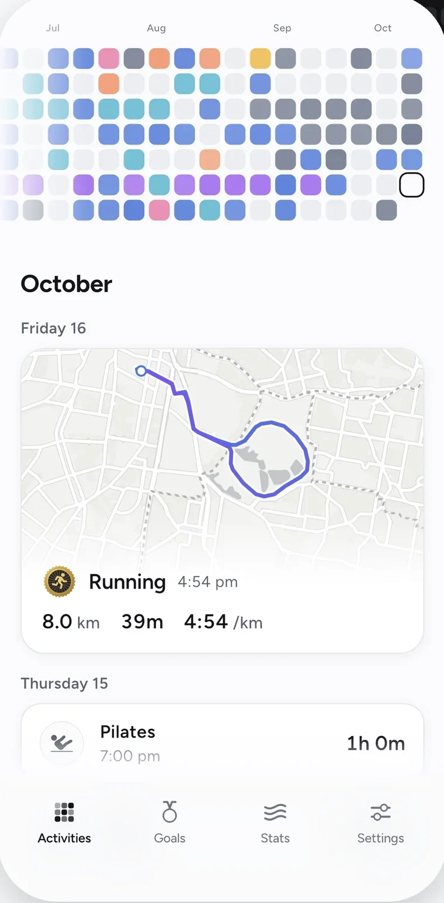
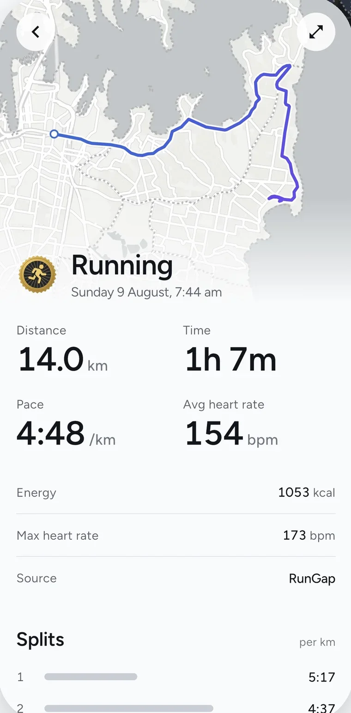
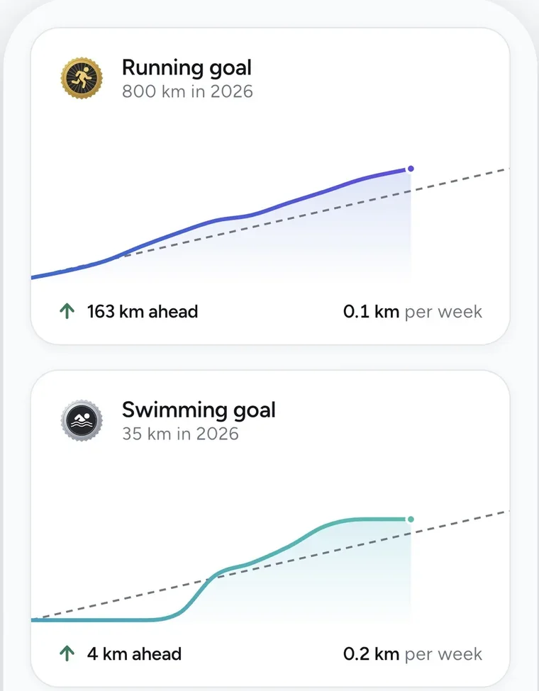
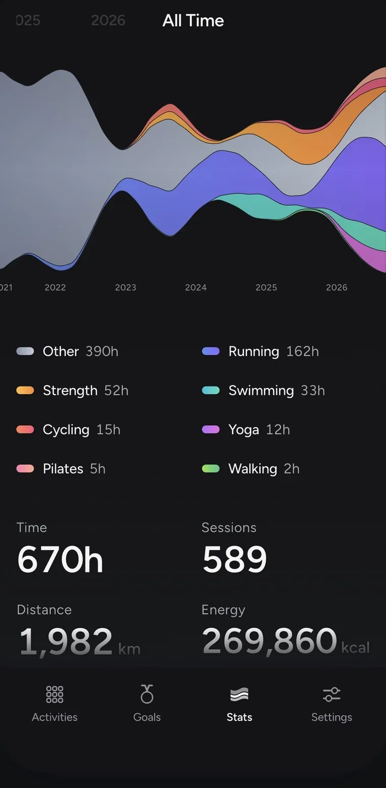

Fitness, without the noise
Cadent is a quiet fitness tracker for iPhone. It imports your workouts from Apple Health and shows you your year. No feed, no streaks, no ads.

Needs an iPhone and Apple Health. Best with an Apple Watch.

Every workout, logged
Route map, splits, and pace, heart rate and elevation on one chart. Pool swims get pace per 100 m. Everything sits in one feed, with a grid at the top showing every day you moved.

Set a goal, stay ahead
Set a yearly target for any activity. Each goal is a chart with a pace line through it, so you can see whether you're ahead or behind and what you need per week. Distance and hours in each activity add up to badges. They count everything you've ever logged, so they never reset.

Your year in motion
Your training as a stream across the year, by activity, back to your first workout.

Private by design
No followers, no sharing, no ads. We don't want your data.
Details
- Seven activitiesRunning, cycling, swimming, walking, strength, yoga and pilates, each with its own goals and badges. Anything else is counted under Other.
- GoalsBy distance or by sessions, per week, month or year.
- AppearanceLight or dark, your own activity colours, eight app icons.
- Your accountSign in with Apple, Google or email. Your workouts are kept in your account and carry over to a new phone.
- Your dataExport every workout as a CSV file. Deleting your account from Settings deletes everything.
- FreeFree on the App Store. No subscription.
Get Cadent
Free on the App Store.
Support
For help, a bug or a suggestion, email the support address.